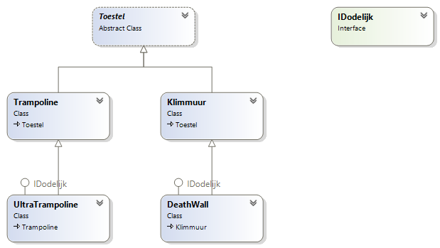
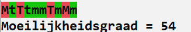
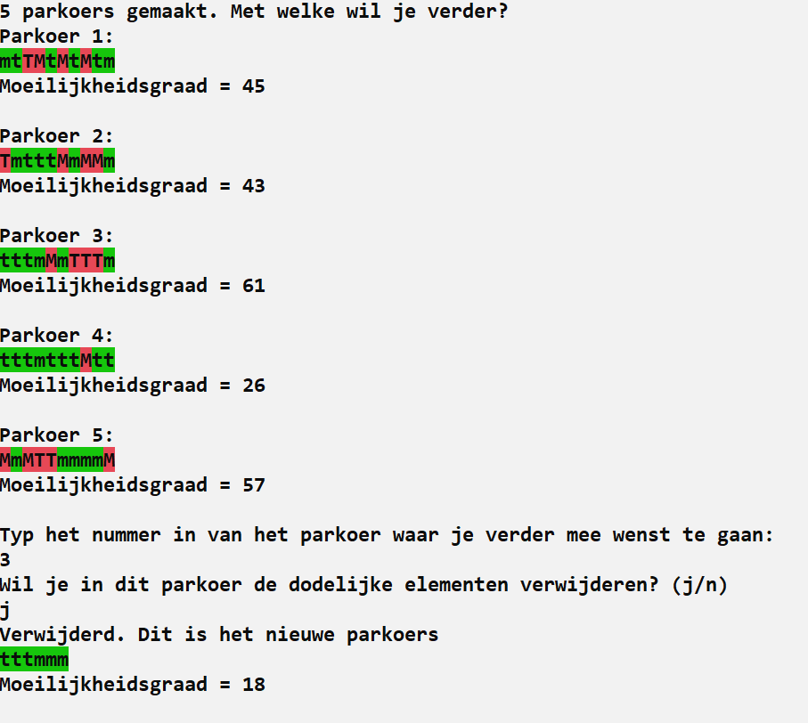

Volgende opgave was de vaardigheidsproefopdracht voor het inhaalexamen van dit vak (OOP) in augustus 2021
Intro
Ultimate Beast Master is een populaire, Amerikaanse, tv-show waarin topatleten een ongelooflijk zware obstakelkoers zo snel mogelijk moeten afleggen. Enkel de sterkste, meest atletische mannen en vrouwen slagen er in om het einde van het parkoers te bereiken.
Als organisator van de tvshow wordt je gevraagd om een systeem te ontwikkelen waarin een parkoers kan gegenereerd worden waarvan ook de moeilijkheidsgraad kan berekend worden.
Basisklassen
Eerst gaan we de nodige toestellen maken om dan later een parkoers van toestellen aan te leggen volgens volgende klasse:

IDodelijk interface
Deze interface is als volgt:
interface IDodelijk
{
public bool VeiligheidsActief { get; }
}Toestellen die mogelijk dodelijk zijn, zullen deze interface hebben.
Toestel-klasse
Alle toestellen die in een parkoers voorkomen zullen van deze klasse overerven.
Het gaat om een abstracte klasse met:
- Een protected instantievariabele
tekenChardat standaardois. Dit teken zal gebruikt worden om het toestel te visualiseren. - Methode
Tekendie hettekenCharop de huidige plek in de console schrijft (metWrite). - Een abstracte methode
BerekenMoeilijkheidsgraaddie eenintals resultaat heeft en geen parameters aanvaardt.
Trampoline-klasse
- Is een
Toestel. - Heeft een default constructor:
- die de moeilijkheidsgraad van het object op een willekeurige waarde geeft van 1 tot en met 4 (dat vervolgens in
BerekenMoeilijkheidsgraadzal gebruik worden). - het
tekenCharwordt op eentingesteld.
- die de moeilijkheidsgraad van het object op een willekeurige waarde geeft van 1 tot en met 4 (dat vervolgens in
UltraTrampoline-klasse
Een Ultratrampoline is een trampoline die gevaarlijk is. Er is geen mogelijkheid om netten rond het ding te plaatsen, dus deze klasse verdient zeker de term dodelijk.
De klasse:
- Is een
Trampoline. - Heeft een default constructor die het
tekenCharopTinstelt. - Implementeert de
IDodelijkinterface en zal altijdfalseteruggeven bijVeiligheidsActief(de beveiligingsinstelling van een Ultratrampoline kan dus nooit anders zijn). - De moeilijkheidsgraad van deze klasse is “10 + de waarde die in de default constructor van de
Trampolinewerd berekend”.
Klimmuur-klasse
Een klimmuur wordt gedefinieerd door het aantal handvaten die de muur heeft.
De klasse:
- Is een
Toestel. - Heeft een overloaded constructor waarmee het aantal
klimelementen(handvaten) kan ingesteld worden via een meegegevenint. Detekencharis eenm. - De moeilijkheidsgraad is 3 indien er een even aantal
klimelementenzijn, anders is deze 4.
DeadWall-klasse
De dodelijk deadwall is een klimmuur waar eventueel veiligheidsnetten onder kunnen geplaatst worden zodat deelnemers die vallen opgevangen kunnen worden.
- Is een
Klimmuur. - Heeft een default constructor waarmee kan ingesteld worden of de wall met veiligheidsnetten werkt of niet (aan de hand van een meegegeven
bool). EenDeadWallheeft altijd21klimelementen.tekencharisM. - Implementeert de
IDodelijkeinterface en zal deboolteruggeven inVeiligheidsActiefdie in de constructor werd meegegeven. - De moeilijkheidsgraad is 5 indien er veiligheidsnetten zijn, anders is deze 10.
Parkoer-klasse
Deze klasse beschrijft een volledig parkoers van toestellen die de speler zal moeten bedwingen in de Ultimate Beast Master tv-show.
- Deze klasse heeft een lijst van toestellen.
- Een constructor die 2 parameters aanvaard, namelijk het aantal toestellen (x) waaruit het parkoers bestaat en een bool (y) om aan te geven of dodelijke toestellen met beveiliging moeten worden toegevoegd:
- De constructor zal x willekeurige toestellen aan de lijst toevoegen. Ieder toestel (
Trampoline,UltraTrampoline,KlimmuurenDeathwall) heeft even veel kans om gekozen te worden. - Indien een
Klimmuurwordt gekozen dan krijgt deze een willekeurig aantal klimtoppen tussen 10 en 50. - Indien een Deathwall wordt gekozen dan wordt de bool
ymeegeven om aan te geven of er wel of geen veiligheidsnet moet toegevoegd worden.
- De constructor zal x willekeurige toestellen aan de lijst toevoegen. Ieder toestel (
- De klasse heeft een methode
VerwijderDodelijke. Wanneer deze methode wordt aangeroepen dan worden alleIDodelijketoestellen uit de lijst verwijderd. - De klasse een private methode
BerekenMoeilijkheidsgraaddie eenintteruggeeft. De moeilijkheidsgraad van een parkoers bestaat uit de som van de moeilijkheidsgraden van alle toestellen in de lijst. - De klasse heeft een methode
ToonParkoers. Deze methode zal alle toestellen na elkaar op het scherm tonen waarbij de achtergrond van ieder element rood of groen zal zijn:- Rood indien het een
IDodelijktoestel is (ongeacht of er veiligheidsnetten aanwezig zijn), groen in de andere gevallen. - Nadien wordt ook nog de totale moeilijkheidsgraad van het parkoers getoond.
- Voorbeeld output:

- Rood indien het een
Hoofdprogramma
De hoofdapplicatie bestaat uit volgende stappen
- Eerst worden er 5 willekeurige
Parkoer-objecten aangemaakt en in een lijst bewaard. - Vervolgens worden alle
Parkoer-objecten in de lijst gevisualiseerd. - De gebruiker kiest met welk parkoer hij verder wilt gaan.
- Er wordt nu aan de gebruiker gevraagd of de dodelijke toestellen uit het parkoers moeten worden gehaald. Indien ja, wordt dit gedaan (alle
IDodelijkeobjecten worden uit de lijst van het gekozenParkoerobject gehaald). - Finaal wordt het gekozen parkoers nogmaals getoond, al dan niet zonder de dodelijke toestellen.
Voorbeeld output:

Dank aan Wael Orraby.
Klasses:
abstract class Toestel
{
protected char tekenChar = 'o';
public void Teken()
{
Console.Write(tekenChar);
}
public abstract int BerekenMoeilijkheidsgraad();
}
internal class Trampoline : Toestel
{
static Random random = new Random();
private int moeilijkheidsgraad;
public Trampoline()
{
tekenChar = 't';
moeilijkheidsgraad = random.Next(1, 5);
}
public override int BerekenMoeilijkheidsgraad()=> this.moeilijkheidsgraad;
}
internal class UltraTrampoline : Trampoline, IDodelijk
{
public UltraTrampoline()
{
tekenChar = 'T';
}
public bool VeiligheidsActief
{
get
{
return false;
}
}
public override int BerekenMoeilijkheidsgraad()
{
return base.BerekenMoeilijkheidsgraad() + 10;
}
}
internal class Klimmuur : Toestel
{
public Klimmuur(int inaantalHandvaten)
{
tekenChar = 'm';
aantalHandvaten = inaantalHandvaten;
}
private int aantalHandvaten;
public override int BerekenMoeilijkheidsgraad()
{
if (aantalHandvaten % 2 == 0)
return 3;
return 4;
}
}
internal class DeadWall : Klimmuur, IDodelijk
{
private bool veiligheidsNetten;
public bool VeiligheidsActief
{
get
{
return veiligheidsNetten;
}
}
public DeadWall(bool heeftVeiligheidsnetten) : base(21)
{
veiligheidsNetten = heeftVeiligheidsnetten;
tekenChar = 'M';
}
public override int BerekenMoeilijkheidsgraad()
{
if (VeiligheidsActief) return 5;
return 10;
}
}
internal class Parkoer
{
static Random r = new Random();
List<Toestel> toestellenLijst = new List<Toestel>();
public Parkoer(int x, bool y)
{
for (int i = 0; i < x; i++)
{
int rng = r.Next(1, 5);
switch (rng)
{
case 1:
toestellenLijst.Add(new Trampoline());
break;
case 2:
toestellenLijst.Add(new UltraTrampoline());
break;
case 3:
toestellenLijst.Add(new Klimmuur(r.Next(10, 51)));
break;
case 4:
toestellenLijst.Add(new DeadWall(y));
break;
}
}
}
public void VerwijderDodelijke()
{
var tempLijst = new List<Toestel>();
foreach (var item in toestellenLijst)
{
if (!(item is IDodelijk))
{
tempLijst.Add(item);
}
}
toestellenLijst = tempLijst;
}
private int BerekenMoeilijkheidsgraad()
{
int som = 0;
foreach (var item in toestellenLijst)
{
som += item.BerekenMoeilijkheidsgraad();
}
return som;
}
public void ToonParkoers()
{
foreach (var item in toestellenLijst)
{
if (item is IDodelijk)
Console.BackgroundColor = ConsoleColor.Red;
else
Console.BackgroundColor = ConsoleColor.Green;
Console.ForegroundColor = ConsoleColor.Black;
item.Teken();
Console.ResetColor();
}
Console.WriteLine($"\nMoeilijkheidsgraad = {BerekenMoeilijkheidsgraad()}");
}
}Program.cs
List<Parkoer> parkoersList = new List<Parkoer>();
Random r = new Random();
Console.WriteLine("5 Parkoers gemaakt. Met welke wil je verder?");
for (int i = 0; i < 5; i++)
{
parkoersList.Add(new Parkoer(10, r.Next() / 2 == 0 ? true : false));
}
for (int i = 0; i < parkoersList.Count; i++)
{
Console.WriteLine($"Parkoer {i + 1}");
parkoersList[i].ToonParkoers();
Console.WriteLine();
}
Console.WriteLine("Typ het nummer in van het parkoer waar je verder mee wenst te gaan:");
int parkoerKeuze = int.Parse(Console.ReadLine());
Console.WriteLine("Wil je in dit parkoer de dodelijke elementen verwijderen ? (j/n)");
string verwijderKeuze = Console.ReadLine();
if (verwijderKeuze.ToLower() == "j")
{
parkoersList[parkoerKeuze - 1].VerwijderDodelijke();
Console.WriteLine("Verwijderd. Dit is het nieuwe parkoers : ");
}
else
{
Console.WriteLine("Oke. Dit is het parkoers : ");
}
parkoersList[parkoerKeuze - 1].ToonParkoers();